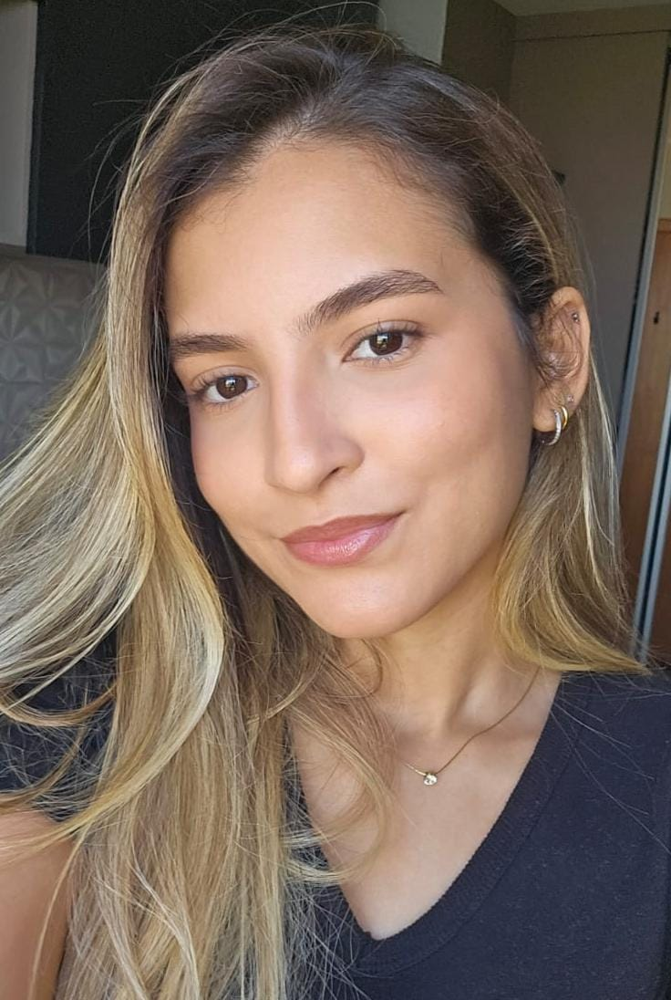
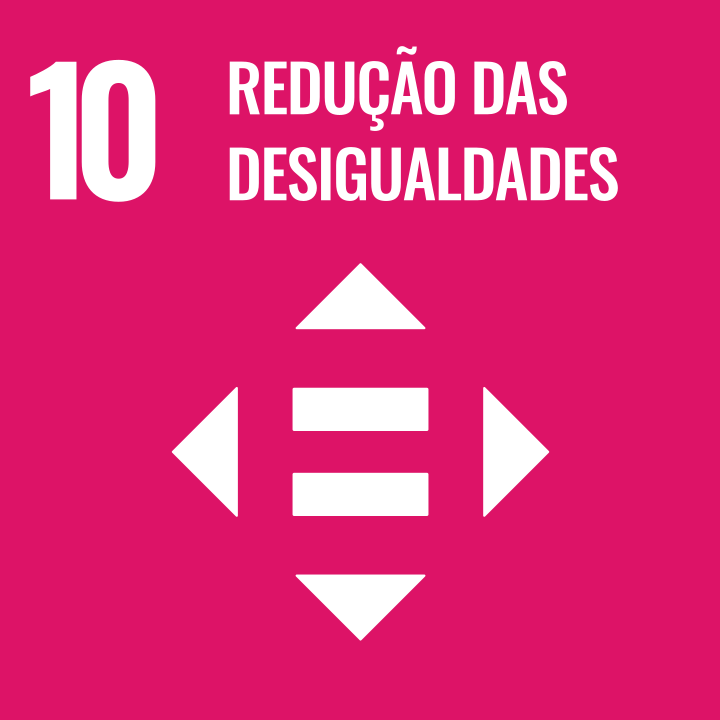

Estudante de Engenharia de Software na Universidade Tecnológica Federal do Paraná.

Inglês avançado - EF SET English Certificate
Espanhol intermediário - Centro de Estudos de Línguas (CEL)
Pacote Office 365 (Word, Excel, PowerPoint)
Google Workspace (Docs, Sheets, Drive)
Engenharia de software | 2025 - Cursando
Universidade Tecnológica Federal do Paraná
M-Tec em Desenvolvimento de Sistemas | 2022 – 2024
ETEC Amin Jundi
Técnico em Informática | 2023 – 2024
ETEC Amin Jundi
Leitura;
Confeitaria;
Journaling.